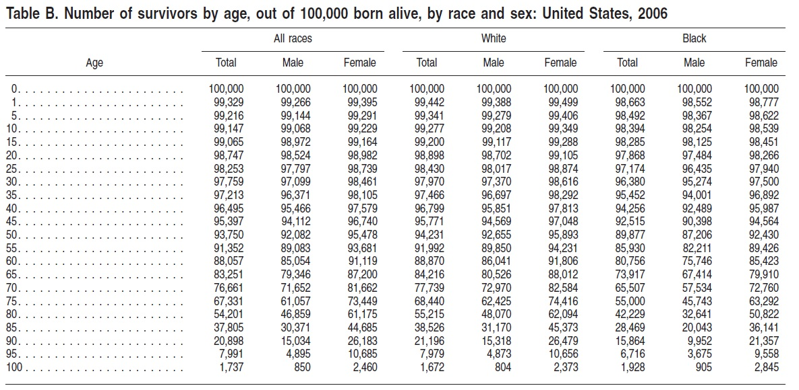
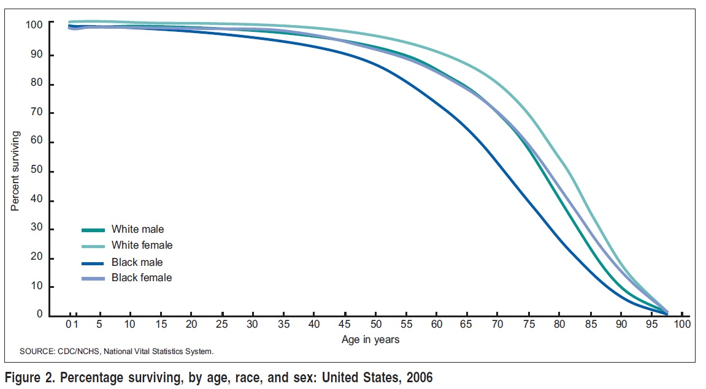
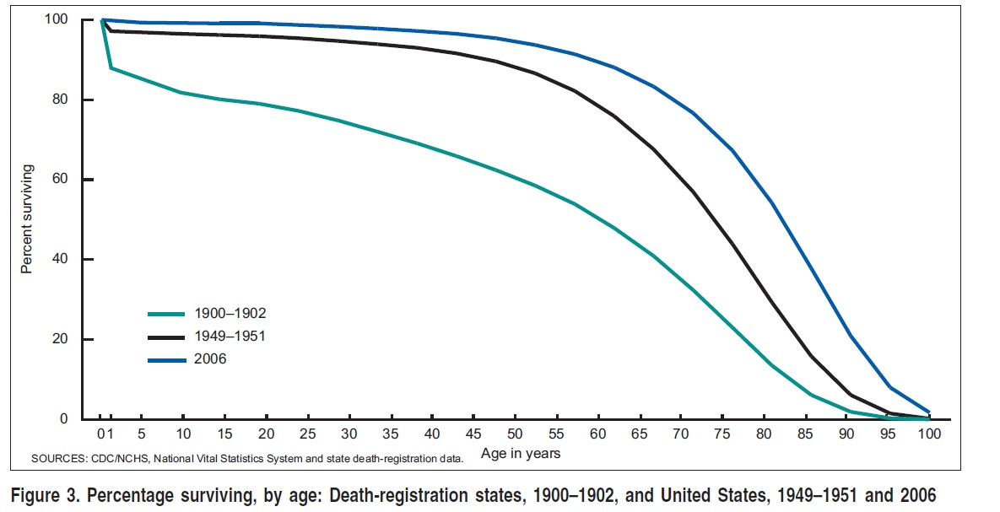
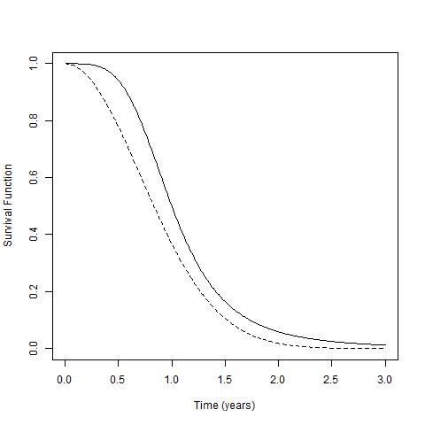
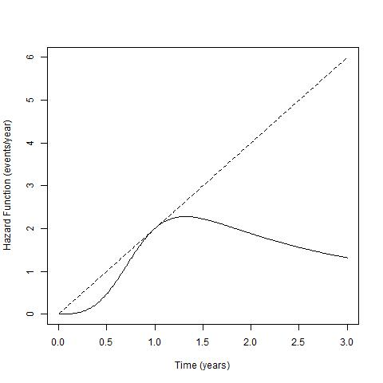
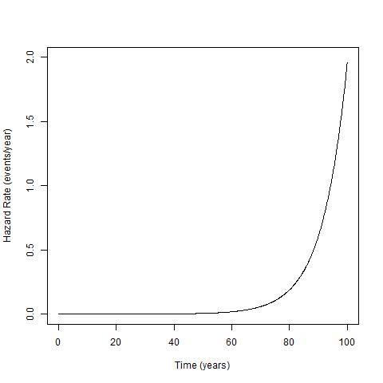
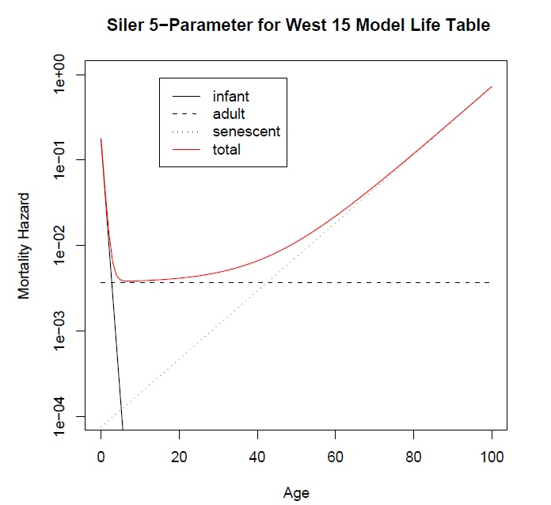
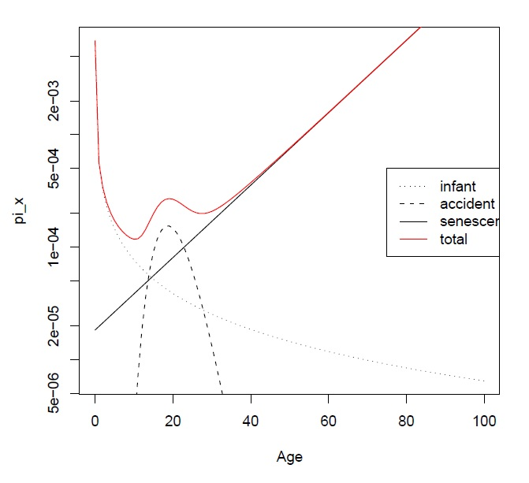
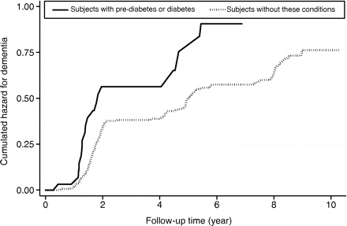

class: center, middle, gray # 1) What is a likelihood and how is it constructed? --- class: center, middle, gray, big "The likelihood that any parameter (or set of parameters) should have any assigned value (or set of values) is proportional to the probability that if this were so, the totality of observations should be that observed." --- class: center, middle, gray, big $$ \mathcal{L}(\theta | x ) \propto P(x | \theta) $$ --- class: center, middle, gray, big Consider $x_1, \ldots, x_n$ iid $$ \mathcal{L}(\theta | \mathbf{x} ) \propto \prod_{i=1}^n f(x_i | \theta) $$ --- class: center, middle, gray, big # It's NOT a probability "We may discuss the probability of occurrence of quantities which can be observed . . . in relation to any hypotheses which may be suggested to explain these observations. We can know nothing of the probability of hypotheses . . . [We] may ascertain the likelihood of hypotheses . . . by calculation from observations: . . . to speak of the likelihood . . . of an observable quantity has no meaning." --- class: center, middle, gray, big # 2) What does a p-value of 0.04 mean? --- class: center, middle, gray, big The probability, under the null hypothesis, of seeing data as extreme or more extreme than what we saw is 0.04. --- class: gray, big # What is the derivative of $x^2$ wrt $x$ <div style="position:relative; top:150px"> $$2x$$ </div> --- class: gray, big # What is the derivative of $e^x$ wrt $x$ <div style="position:relative; top:150px"> $$e^x$$ </div> --- class: gray, big # What is $\int_{-\infty}^{\infty} \frac{1}{\sqrt{2\pi}}e^{-\frac{x^2}{2}}$? <div style="position:relative; top:150px"> $$ 1 $$ </div> --- class: center, middle, gray # Survival and Hazard Functions --- class: image # US Life Table <div style="position:relative; top:25px"> <center></img></center> </div> --- class: image # US Survival Functions in 2006 <div style="position:relative; top:25px"> <center></img></center> </div> --- class: image # US Survival Functions in (about) the 20th Century <div style="position:relative; top:25px"> <center></img></center> </div> --- class: image # Log-Logistic and Weibull Survival <div style="position:relative; top:25px"> <center></img></center> </div> --- class: image # Log-Logistic and Weibull Hazard <div style="position:relative; top:25px"> <center></img></center> </div> --- class: image # Dutch Mortality <div style="position:relative; top:25px"> <center></img></center> </div> --- class: image # UK Mortality (5 parameter model) <div style="position:relative; top:25px"> <center></img></center> </div> --- class: image # UK Mortality (8 parameter model) <div style="position:relative; top:25px"> <center></img></center> </div> --- class: image # Dementia and Diabetes <div style="position:relative; top:25px"> <center></img></center> </div>